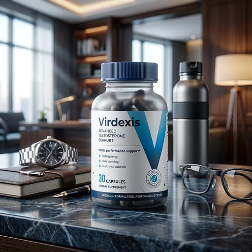
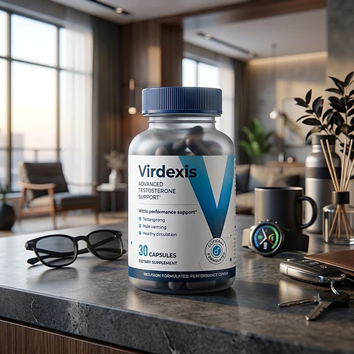

What Is Virdexis And How Does It Work?
Virdexis is a daily capsule formula designed to support male vitality, healthy testosterone levels, and renewed self-confidence for men who want to improve their energy and performance through a natural, sustainable approach — without extreme measures, harsh stimulants, or short-term fixes.
It is built around what the brand calls a "triple protocol": a focused combination of herbs, minerals, and natural vitamins that work together to support the body's natural testosterone production, help protect existing testosterone from conversion, and promote a balanced hormonal environment from within.
The ingredients in Virdexis are carefully selected to support energy, strength, and recovery, especially for men over 30 dealing with low drive, afternoon energy crashes, stubborn belly fat, and the effects of aging on vitality and self-confidence.
Rather than acting as a quick fix or an aggressive solution, Virdexis focuses on long-term support and balance, working gradually alongside daily routines to help the body maintain more stable energy, sharper focus, and steady, consistent progress over time.
With consistent daily use, many men report improved physical energy, better recovery after workouts, more restful sleep, and gradual, noticeable changes in overall performance — so that workouts and daily tasks feel easier over time.
From a practical standpoint, Virdexis is not a magic pill but a daily vitality support supplement designed to work quietly in the background — and help men stay confident and focused on their long-term health and performance goals.
Free from harsh chemicals, non-GMO, and manufactured under strict quality standards, Virdexis is designed for consistent daily use, offering safety, reliability, and consistency for those seeking a natural, non-prescription approach to sustained vitality, energy, and self-confidence.
Virdexis Ingredients
Each capsule of Virdexis contains a carefully selected combination of natural ingredients chosen to support healthy testosterone levels, physical energy production, and hormonal balance as part of a consistent daily routine:
D-Aspartic Acid (2,000 mg): An amino acid researched for its role in supporting natural testosterone production.
Tongkat Ali (300 mg): A potent root studied for its support of natural testosterone pathways, libido, and physical drive in men.
Fenugreek (500 mg): A traditional plant extract used to support strength, vitality, and overall male health.
Zinc (30 mg): An essential mineral that contributes to maintaining normal blood testosterone levels and healthy immune function.
Boron (10 mg): A trace mineral researched for its role in supporting free testosterone and regulating estrogen levels in men.
Ashwagandha KSM-66 (600 mg): An adaptogenic herb traditionally used to balance stress and cortisol, and support sleep and recovery.
Vitamin D3 (3,000 IU): A vitamin that contributes to normal muscle function and plays an important role in hormonal health.
Black Pepper Extract: Added to help improve the absorption of the other ingredients.
Together, these ingredients work synergistically to support testosterone production, protect against estrogen conversion, and promote an optimal hormonal environment from within. Virdexis is designed for daily use and offers a natural, non-prescription approach to supporting long-term male health.
Virdexis Side Effects
Virdexis is designed for men of different ages and lifestyles who are looking for a natural, balanced approach to male vitality, energy, and hormonal balance — especially those who want to support performance, stamina, and self-confidence without extreme measures, harsh stimulants, or injections.
All ingredients in Virdexis are carefully selected and tested for quality, purity, and safety, to ensure the formula is free from unnecessary additives or harmful contaminants. According to the official website, Virdexis is manufactured from quality-tested ingredients and is non-GMO, reinforcing consistency, reliability, and product integrity.
With a growing number of users and no widespread reports of serious side effects, Virdexis is generally considered a well-tolerated option for men looking for daily vitality and performance support as part of a consistent health routine. Because the formula contains natural herbs and minerals, individuals with known allergies to any of the listed ingredients should start cautiously and discontinue use if they notice any discomfort.
As with any dietary supplement, individuals with existing medical conditions or those currently taking prescription medications should consult a healthcare professional before starting Virdexis, to ensure it fits safely within their personal health plan. The same recommendation applies to anyone under medical supervision for hormonal conditions or anyone taking blood-thinning medications.
Virdexis Dosage
Virdexis is designed to fit easily into a daily routine, so consistency is simple and sustainable. Each bottle contains 30 capsules, intended for a full 30-day supply when used as directed.
The recommended approach is to take one serving (one capsule) of Virdexis per day, preferably at the same time each day as part of your regular routine. Many users choose to take Virdexis in the evening, to support energy levels, focus, and self-confidence throughout the following day.
For best results, consistency is key. Taking Virdexis every day helps maintain steady support for vitality and stamina, making it easier to sustain healthy habits and see gradual progress over time rather than expecting overnight changes.
There is no need for complicated schedules or multiple doses. One daily serving is designed to work gradually alongside a balanced diet, adequate hydration, and an active lifestyle. Pairing your daily capsule with a meal may help with absorption and comfort.
As with any dietary supplement, it is important not to exceed the recommended dosage. Virdexis works best when used consistently, combined with healthy daily habits and mindful nutrition, to support long-term male health.
Virdexis – Refund Policy
You can order Virdexis with confidence: according to the official terms, every purchase is covered by a 30-day money-back guarantee from the date of delivery. This gives you time to decide whether the product is right for your daily vitality routine.
Within 30 calendar days of delivery, you can return products for any reason and receive a refund, as long as they are sealed, in their original packaging, and in new, resalable condition.
How the refund process works: If you decide Virdexis is not right for you, simply contact customer support within 30 days of delivery to request a return. For orders with multiple bottles, only sealed, unopened units are eligible for a refund. Original shipping costs and return shipping fees are not refundable. Once the returned items are received and inspected, your refund will be processed.
Customer Support Contact Information: Through the Help Center page on the official website.
Refund Processing Time: After your refund request is approved and processed, you will receive a confirmation email. Depending on your bank or credit card provider, it may take a few business days for the refund to appear on your statement.
This refund policy is designed to give customers peace of mind and a clear, transparent experience when trying Virdexis.
Virdexis Customer Reviews
-
Jacob P. — Tel Aviv, IsraelVerified Purchase – 3 Bottles
"I didn't tell my wife I was taking anything. I wanted to know if it was real or just in my head. In the third week she asked what happened to me. I told her the truth over dinner. Best conversation we've had in years."
-
Andrew H. — Haifa, IsraelVerified Purchase – 3 Bottles
"52 and feeling stupid for waiting this long. My doctor basically shrugged and said it happens. I didn't want the pills with the headaches. After three bottles the energy went up, the drive came back first, and the rest followed. I'm not exaggerating when I say this changed the way I walk into a room."
-
Richard B. — Netanya, IsraelVerified Purchase – 3 Bottles
"Two months in and it's not subtle at all. The energy came back first, and everything else followed. I stopped planning my evenings around whether I'd have the drive. My only regret is waiting until 55 to try something."
Virdexis – Where To Buy
If you have decided to try Virdexis, it is important to be careful about where you purchase it. Currently, Virdexis is not officially sold on marketplaces such as Amazon, eBay, or Walmart, and the manufacturer does not authorize any third-party retailers.
Some users have reported finding similar-looking products on third-party platforms that may not be authentic, raising concerns about quality, safety, and ingredient integrity. These unauthorized sellers are not officially approved, and products purchased outside the official source may not be covered by the 30-day money-back guarantee.
For this reason, most customers recommend purchasing Virdexis only through the official website. Buying directly from the official source helps ensure you receive the authentic, original product, manufactured to the appropriate quality standards, with full access to customer support and the complete refund policy.
To avoid unnecessary risks and ensure a safe experience, always verify that you are ordering from the official Virdexis website before completing your purchase.
To ensure you’re getting the authentic product, most users choose to visit the official website.
Is Virdexis A Scam?
Based on an in-depth analysis, Virdexis does not appear to be a scam. It is a legitimate, well-formulated supplement created to support healthy male vitality, hormonal balance, and daily performance as part of a consistent health routine.
The ingredients in Virdexis — D-Aspartic Acid, Tongkat Ali, Fenugreek, Zinc, Boron, Ashwagandha KSM-66, Vitamin D3, and Black Pepper Extract — have promising potential in supporting energy, strength, and recovery, key factors often associated with the natural decline in testosterone due to age, lifestyle, and stress.
In addition to using quality, naturally sourced ingredients, Virdexis is non-GMO and manufactured under strict quality standards, helping to ensure safety, consistency, and reliability.
Many users from different backgrounds report positive changes in their daily routine, improved stamina and self-confidence, and a greater sense of control over their vitality journey — making Virdexis a practical option for those seeking a natural, sustainable approach.
Virdexis is backed by a 30-day money-back guarantee on sealed products. This policy reflects the manufacturer's commitment to transparency and customer satisfaction.
If you're looking for a natural supplement to support performance and vitality without extreme methods, Virdexis is worth considering — especially when purchased directly from the official website.
For those who want to verify product details or check current availability, the official Virdexis website remains the safest option.
